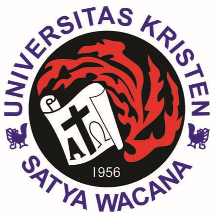
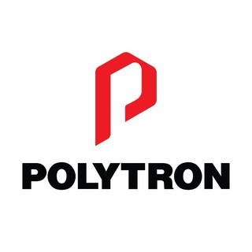
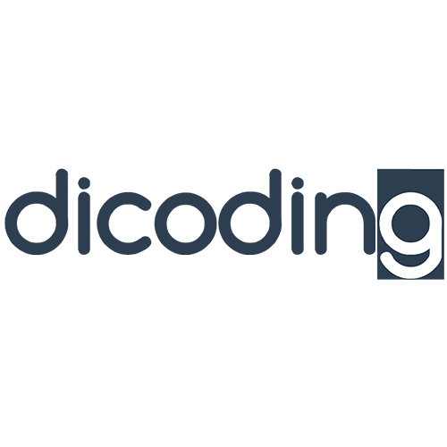
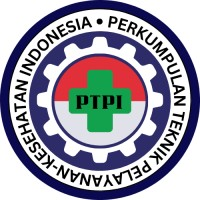
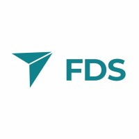

Bagus Satrio Wicaksono
Electronic Engineer
"Strongest where systems get built and shape."
Electronic Engineer with hands-on experience as a Manufacturing Engineer at Polytron Indonesia, specializing in Industrial Internet of Things (IIoT), Embedded Systems, Machine Learning, Computer Vision, and 3D Design. Experienced in DSP, bare metal programming, and embedded software development for manufacturing applications. Contributed to AI and IoT based systems across industrial and research projects, including robotics, web-based platforms, and rehabilitation systems with pose estimation. Proficient in C/C++, Python, TensorFlow, MATLAB, STM32, ARM Cortex-M4, Arduino, CAD Design, and PCB Design. A fast learner and detail-oriented engineer with strong problem-solving skills and a passion for developing innovative technology solutions.


Universitas Kristen Satya Wacana
Fakultas Teknik Elektro
Program Studi: S1 Teknik Elektro (GPA: 3.80)
Tahun Masuk: 2021 | Tahun Lulus: 2025
My Journey

PT Hartono Istana Teknologi [Polytron Indonesia]
Manufacturing Engineer
Jan 2026 - Present
Mengoptimalkan efisiensi produksi manufaktur dan menerapkan solusi Industri 4.0 (IIoT & Otomasi).
Spesifikasi Skill:
Research Intern Function Checker
Sept 2024 - March 2025
Mengoptimalkan efisiensi produksi manufaktur dan menerapkan solusi Industri 4.0 (IIoT & Otomasi).
Spesifikasi Skill:

PT Dicoding Akademi Indonesia
Freelance External Code Reviewer
Aug 2025 - Present
Mengevaluasi submisi kode dari ratusan developer pada spesialisasi Machine Learning.
Spesifikasi Skill:

Information Engineer
PTPI
Sept 2025 - Oct 2025
Mengoptimalkan efisiensi produksi manufaktur dan menerapkan solusi Industri 4.0 (IIoT & Otomasi).
Spesifikasi Skill:

PT Full Drone Solution
Intern Electronic Engineer
Feb 2024 - Jun 2024
Pengembangan sistem elektronika dan kontrol praktis untuk teknologi UAV / Drone.
Spesifikasi Skill:
Technical & Interpersonal Skills
Projects & Experience
PhysioTrack: Smart Assistance for Stroke Therapy
2026
Sistem terapi berbasis AI & IoT terintegrasi (Pose estimation, Python, ESP32) untuk pemulihan medis.
Disease Detection on Ginger Emprit Leaves
2025
Penelitian tugas akhir klasifikasi daun jahe menggunakan arsitektur YOLOv8 & YOLO11.
Rescue Hexapod Robot
2024
Pengembangan algoritma 3-DOF Inverse Kinematics untuk pergerakan kaki robot penyelamat.
Honors & Awards
1st Best Group - Samsung Innovation Campus
Batch Seven (2026)
1st Renewable Energy Write Competition
2025
Finalist KRI (Kontes Robot Indonesia) National
2024 & 2022
Boothcamp ＆ Certifications
DSP From Ground Up™ on ARM Processor
2025
Advanced Embedded Systems Bare Metal Programming
2024
Let's Collaborate
Bagus Satrio Wicaksono, S.T.
Silakan hubungi saya untuk diskusi teknis, rekayasa otomasi industri, atau peluang pengembangan embedded system.